Statistics: Pattern-Detection
UQ SLC Digital Team
2019-01-23

1 Introduction
This section deals with methods that are used to find groups or patterns in data.
2 Cluster Analysis
The most common method in linguistics that is sued to detect groups in data are cluster analyses. Cluster analyses are common in linguistics because they not only detect commonalities based on the frequency or occurrence of featutres but they also allow to visualize when splits between groups have occurred and are thus the method of choice in historical linguistics to determine and show genealogical relationships.
2.1 Underlying Concepts
The next section focuses on the basic idea that underlies all cluster analyses. WE will have a look at some very basic examples to highlight and discuss the principles that cluster analyses rely on.
The underlying idea of cluster analysis is very simple and rather intuitive as we ourselves perform cluster analyses everyday in our our lives. This is so because we group things together under certain lables and into concepts. The first example to exemplyfy this deals with types of trees and how we group these types of trees based on their outward appearance.
Imagine you see six trees representing different types of trees: a pine tree, a fir tree, an oak tree, a beech tree, a phoenix palm tree, and a nikau palm tree. Now, you were asked to group these trees accroing to similarity. Have a look at the plot below and see whether you would have come up with a similar type of grouping.

An alternative way to group the trees would be the follwoing.

In this display, conifers and broad-leaf trees are grouped together because their are more similar to each other compared to palm trees. This poses the question of what is meant by similarity. Consider the display below.
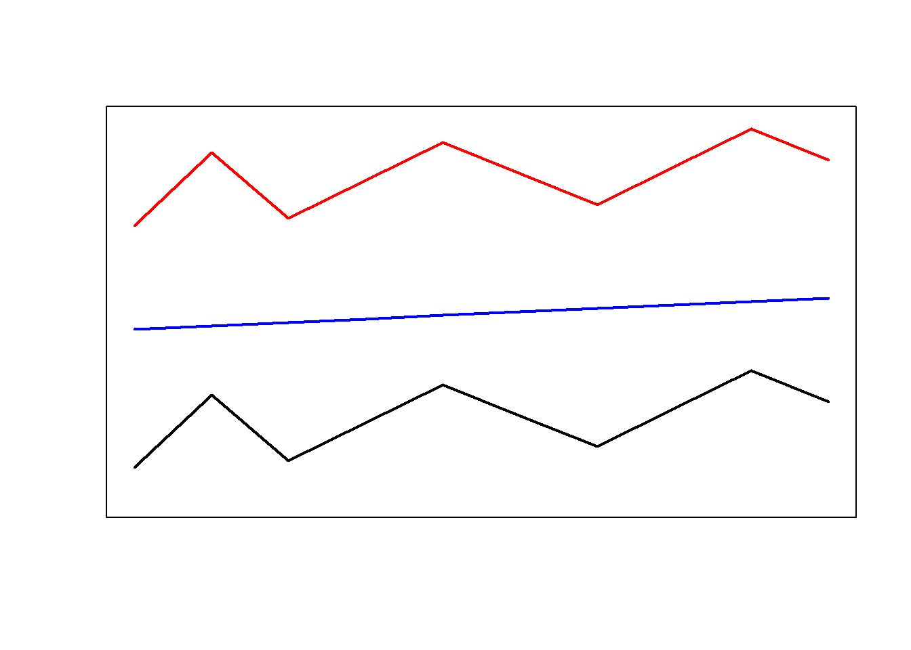
Are the red and the blue line more similar because they have the same shape or are the red and the black line more similar becaus etheir are closer together? Ther is no single correct answer here. Rather the plot indends to raise awarness about the fact that how cluster analyses group data depends on how similarity is defined in the respective algorithm.
Let’s consider another example to better understand how cluster analyses determine which data points should be merged when. Imagine you have five students adn want to group them togehter based on their overall performance in school. The data that you rely on are their grades in math, music, and biology (with 1 being the best grade and 6 being the worst).
| Math | Music | Biology | |
|---|---|---|---|
| StudentA | 2 | 3 | 2 |
| StudentB | 1 | 3 | 2 |
| StudentC | 1 | 2 | 1 |
| StudentD | 2 | 4 | 4 |
| StudentE | 3 | 4 | 3 |
The first step in determining the similarity among students is to cerate a distance matrix.
diststudents <- dist(students, method = "manhattan")The distance matrix below shows that Student A and Student B only differ by one grade. Student B and Student C differ by 2 grades. Student A and Student C differ by 3 grades and so on.
StudentA StudentB StudentC StudentDStudentB 1
StudentC 3 2
StudentD 3 4 6
StudentE 3 4 6 2
Based on this distance matrix, we can now implement a cluster analysis in R.
3 Cluster Analysis: Numeric Data
# load libraries
library("cluster")
library("factoextra")## Loading required package: ggplot2## Welcome! Related Books: `Practical Guide To Cluster Analysis in R` at https://goo.gl/13EFCZlibrary("seriation")## Warning: package 'seriation' was built under R version 3.5.2library("NbClust")
library("pvclust")
clusterstudents <- hclust(diststudents, method="ward.D") # create cluster object (ward.D linkage)
# plot result as dendrogram
plot(clusterstudents, hang = 0)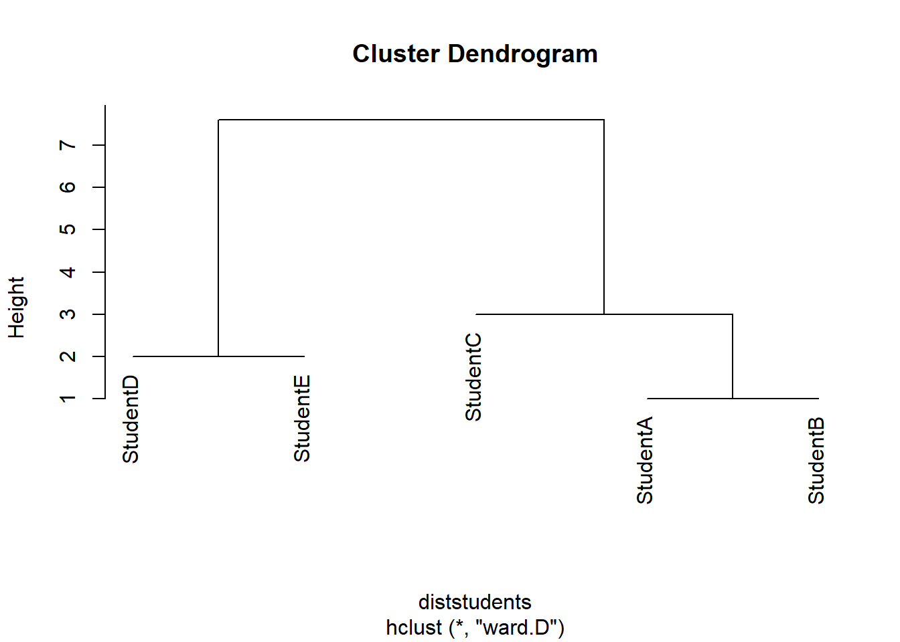
Cluster1 StudentC StudentDStudentC 2.5
StudentD 3.5 6.0
StudentE 3.5 6.0 2.0 Cluster1 StudentC StudentC 2.5
Cluster2 3.5 6.0
4 Distances
To understand how a cluster analysis determines to which cluster a given data points belongs, we need to understand what different distance measures represent.
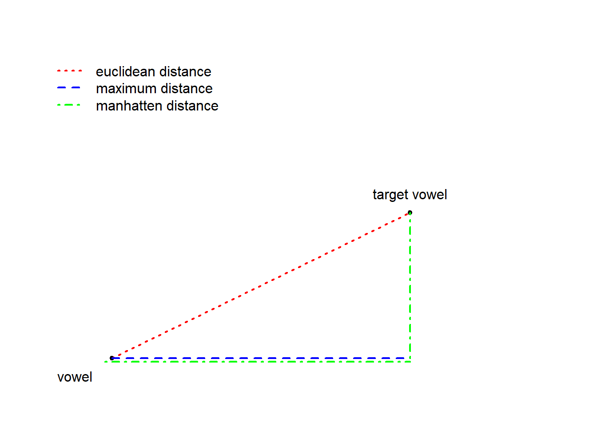
# generate data
ire <- round(sqrt((rnorm(10, 9.5, .5))^2), 3)
sce <- round(sqrt((rnorm(10, 9.3, .4))^2), 3)
bre <- round(sqrt((rnorm(10, 6.4, .7))^2), 3)
aus <- round(sqrt((rnorm(10, 6.6, .5))^2), 3)
nze <- round(sqrt((rnorm(10, 6.5, .4))^2), 3)
ame <- round(sqrt((rnorm(10, 4.6, .8))^2), 3)
can <- round(sqrt((rnorm(10, 4.5, .7))^2), 3)
jam <- round(sqrt((rnorm(10, 1.4, .2))^2), 3)
phi <- round(sqrt((rnorm(10, 1.5, .4))^2), 3)
ind <- round(sqrt((rnorm(10, 1.3, .5))^2), 3)
clus <- data.frame(ire, nze, can, ame, phi, jam, bre, sce, aus, ind)
# add row names
rownames(clus) <- c("nae_neg", "like", "clefts", "tags", "youse", "soitwas", "dt", "nsr", "invartag", "wh_cleft")
# inspect data
clus ire nze can ame phi jam bre sce aus indnae_neg 8.609 6.788 4.691 5.079 1.624 1.467 7.212 9.592 6.298 0.931 like 9.872 6.510 4.207 4.969 1.527 1.381 5.894 9.503 7.087 1.140 clefts 10.062 7.263 5.513 5.215 2.189 1.480 7.039 8.996 6.639 1.700 tags 9.198 6.636 4.452 5.210 1.196 1.326 5.967 8.731 7.007 1.067 youse 8.783 6.220 5.270 3.605 1.404 1.531 6.497 9.915 7.422 1.441 soitwas 9.555 6.653 5.106 4.617 1.367 1.271 6.633 8.529 6.964 1.252 dt 9.478 6.681 4.067 5.031 1.627 1.272 6.057 9.288 7.226 1.087 nsr 9.746 6.792 3.136 5.217 1.566 1.422 7.313 9.388 5.915 1.327 invartag 9.307 6.596 3.449 4.336 1.774 1.298 6.562 10.177 5.209 1.593 wh_cleft 9.336 6.385 5.968 5.107 0.915 1.300 7.095 9.592 7.330 1.760
str(clus)‘data.frame’: 10 obs. of 10 variables: $ ire: num 8.61 9.87 10.06 9.2 8.78 … $ nze: num 6.79 6.51 7.26 6.64 6.22 … $ can: num 4.69 4.21 5.51 4.45 5.27 … $ ame: num 5.08 4.97 5.21 5.21 3.6 … $ phi: num 1.62 1.53 2.19 1.2 1.4 … $ jam: num 1.47 1.38 1.48 1.33 1.53 … $ bre: num 7.21 5.89 7.04 5.97 6.5 … $ sce: num 9.59 9.5 9 8.73 9.91 … $ aus: num 6.3 7.09 6.64 7.01 7.42 … $ ind: num 0.931 1.14 1.7 1.067 1.441 …
summary(clus) ire nze can ame Min. : 8.609 Min. :6.220 Min. :3.136 Min. :3.605
1st Qu.: 9.225 1st Qu.:6.532 1st Qu.:4.102 1st Qu.:4.705
Median : 9.407 Median :6.644 Median :4.572 Median :5.055
Mean : 9.395 Mean :6.652 Mean :4.586 Mean :4.839
3rd Qu.: 9.698 3rd Qu.:6.761 3rd Qu.:5.229 3rd Qu.:5.184
Max. :10.062 Max. :7.263 Max. :5.968 Max. :5.217
phi jam bre sce
Min. :0.915 Min. :1.271 Min. :5.894 Min. : 8.529
1st Qu.:1.376 1st Qu.:1.298 1st Qu.:6.167 1st Qu.: 9.069
Median :1.546 Median :1.353 Median :6.598 Median : 9.445
Mean :1.519 Mean :1.375 Mean :6.627 Mean : 9.371
3rd Qu.:1.626 3rd Qu.:1.456 3rd Qu.:7.081 3rd Qu.: 9.592
Max. :2.189 Max. :1.531 Max. :7.313 Max. :10.177
aus ind
Min. :5.209 Min. :0.931
1st Qu.:6.383 1st Qu.:1.100
Median :6.986 Median :1.290
Mean :6.710 Mean :1.330
3rd Qu.:7.191 3rd Qu.:1.555
Max. :7.422 Max. :1.760
# clean data
clust <- t(clus) # transpose data
clust <- na.omit(clust) # remove missing values
#clusts <- scale(clust) # standardize variables
clusts <- as.matrix(clust) # convert into matrixWe now assess if data is clusterable by testing whether or not the data includes nonrandom structures. To means to determine whether the data conatins nonrandomness, we calculate the Hopkins statistic which informs how similar the data is to a random distribution. If the values of the Hopkins are higher than 0.5 then this indicates that the data is random and that there are no inherent clusters. However, if the Hopkins statistic is close to 0, then the data is clusterable. In addition, we will test the optimal number of clusters.
get_clust_tendency(clusts, n = 8, gradient = list(low = "steelblue", high = "white"))$hopkins_stat [1] 0.1943282
$plot 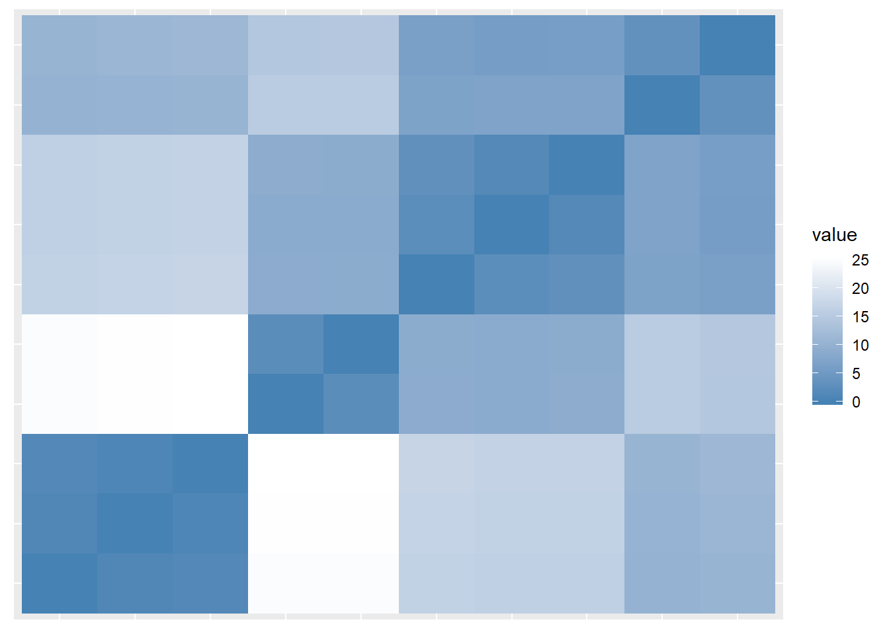
In addition, we will test the optimal number of clusters.
# create distance matrix
clustd <- dist(clusts, method = "euclidean") # create a distance object with eucledian (!) distance
# display distance matrix
round(clustd, 2) ire nze can ame phi jam bre sce ausnze 8.75
can 15.54 7.15
ame 14.49 5.87 3.35
phi 24.94 16.25 10.19 10.65
jam 25.40 16.71 10.50 11.08 1.05
bre 9.02 1.52 7.07 6.01 16.25 16.68
sce 2.40 8.83 15.51 14.58 24.89 25.33 8.92
aus 8.87 2.55 7.03 6.51 16.65 17.01 3.11 8.94
ind 25.54 16.87 10.60 11.26 1.41 0.90 16.82 25.47 17.18
# distplot: if the plot shows different regions (non random, non uniform grey
# areas) then clustering is permitable
dissplot(clustd)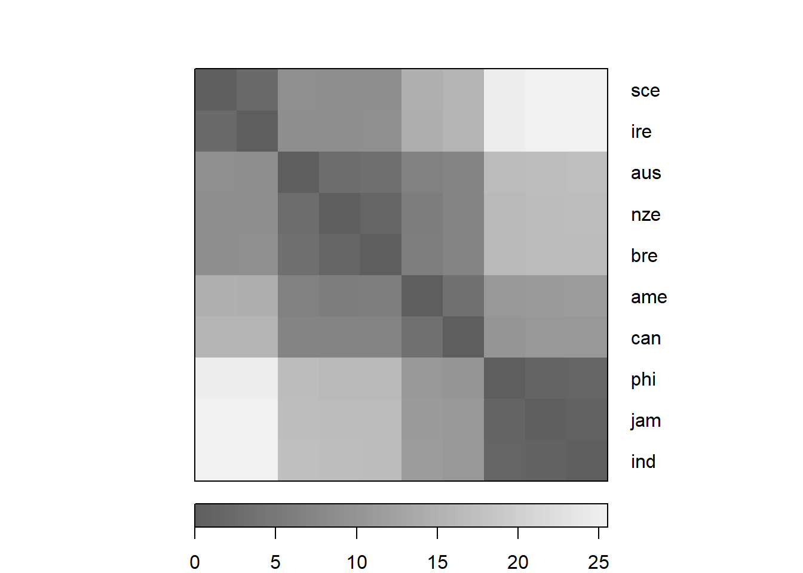
# create distance matrix
clustd <- dist(clusts, method = "euclidean") # create distance matrix (eucledian method: not good when dealing with many dimensions)
#clustd <- dist(clusts, method = "maximum") # create distance matrix (maximum method: here the difference between points dominates)
#clustd <- dist(clusts, method = "manhattan") # create distance matrix (manhattan method: most popular choice)
#clustd <- dist(clusts, method = "canberra") # create distance matrix (canberra method: for count data - focuses on small differences and neglects larger differences)
#clustd <- dist(clusts, method = "binary") # create distance matrix (binary method: for binary data only!)
#clustd <- dist(clusts, method = "minkowski") # create distance matrix (minkowski method: is not a true distance measure)
# distance method for words: daisy(data, method = "euclidean") # other possible distances are "manhattan" and "gower"
#cd <- hclust(clustd, method="single") # create cluster object (single linkage) : cluster with nearest data point
#cd <- hclust(clustd, method="ward.D") # create cluster object (ward.D linkage)
cd <- hclust(clustd, method="ward.D2") # create cluster object (ward.D2 linkage) : cluster in a way to achieve minimum variance
#cd <- hclust(clustd, method="average") # create cluster object (average linkage) : cluster with closest mean
#cd <- hclust(clustd, method="mcquitty") # create cluster object (mcquitty linkage)
#cd <- hclust(clustd, method="median") # create cluster object (median linkage) : cluster with closest median
#cd <- hclust(clustd, method="centroid") # create cluster object (centroid linkage) : cluster with closest prototypical point of target cluster
#cd <- hclust(clustd, method="complete") # create cluster object (complete linkage) : cluster with nearest furthest data point of target cluster
# plot result as dendrogram
plot(cd, hang = -1) # display dendogram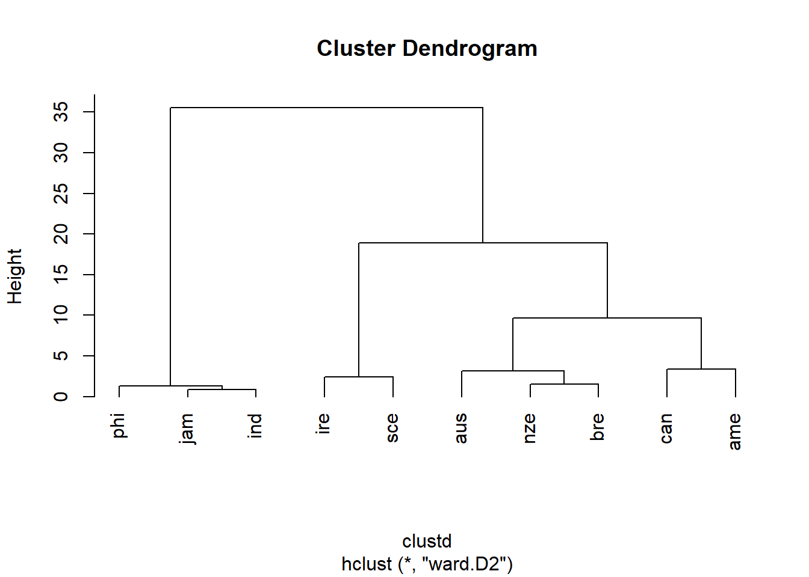
# determine optimal number of clusters
# silhouette width: shows internal similarity of clusters vs similarity between clusters
optclus <- sapply(2:8, function(x) summary(silhouette(cutree(cd, k = x), clustd))$avg.width)
# inspect results
optclus # values lower than .2 indicate that clustering is not appropriate (Levshina 2015: 311)[1] 0.6297443 0.6738933 0.7041123 0.5968685 0.5053608 0.3595336 0.2676748
# the silhouette values display the silhouette width of 2 to 8 clusters
# the highest value 0.75 is provided for 4 clusters
# cut tree into 4 clusters
groups <- cutree(cd, k=4)# plot result as dendrogram
plot(cd, hang = -1) # display dendogram
rect.hclust(cd, k=4, border="red") # draw red borders around clusters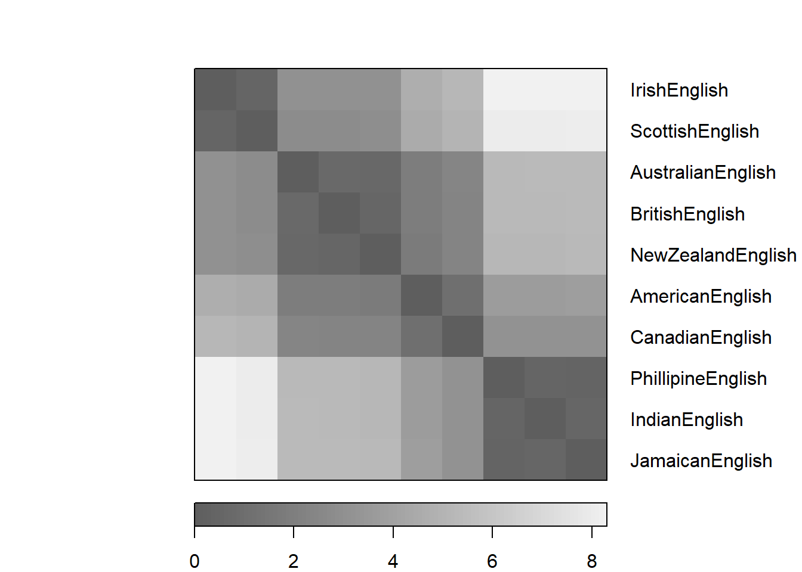
# which factors are particularly important
celtic <- clusts[c(1,8),]
others <- clusts[-c(1,8),]
# calculate column means
celtic.cm <- colMeans(celtic)
others.cm <- colMeans(others)
# calcualte difference between celtic and other englishes
diff <- celtic.cm - others.cm
sort(diff, decreasing = F)soitwas nae_neg tags clefts wh_cleft youse dt nsr 4.809125 4.839250 4.856875 4.899250 4.981500 5.175250 5.252000 5.481000 like invartag 5.598125 5.889875
plot(sort(diff), 1:length(diff), type= "n", xlab ="cluster 2 (others) <-> cluster 1 (celtic)", yaxt = "n", ylab = "")
text(sort(diff), 1:length(diff), names(sort(diff)), cex = 1)# which factors are particularly important
nam <- clusts[c(3,4),]
others <- clusts[-c(3,4),]
# calculate column means
nam.cm <- colMeans(nam)
others.cm <- colMeans(others)
# calcualte difference between celtic and other englishes
diff <- nam.cm - others.cm
sort(diff, decreasing = F)invartag nsr youse dt like nae_neg soitwas -1.422000 -1.257125 -0.964125 -0.790500 -0.776250 -0.430125 -0.416500 tags clefts wh_cleft -0.310000 -0.307000 0.073375
plot(sort(diff), 1:length(diff), type= "n", xlab ="cluster 2 (others) <-> cluster 1 (nam)", yaxt = "n", ylab = "")
text(sort(diff), 1:length(diff), names(sort(diff)), cex = 1)
# we see that wh-clefts and the frequency of like is typical for other varieties
# and that the use of youse as 2nd pl pronoun and inveáriant tags are typical for
# celtic englishes
# validate clustering
# compute pvclust to check how reliable our clusters are
res.pv <- pvclust(clus, method.dist="euclidean", method.hclust="ward.D2", nboot = 100)## Bootstrap (r = 0.5)... Done.
## Bootstrap (r = 0.6)... Done.
## Bootstrap (r = 0.7)... Done.
## Bootstrap (r = 0.8)... Done.
## Bootstrap (r = 0.9)... Done.
## Bootstrap (r = 1.0)... Done.
## Bootstrap (r = 1.1)... Done.
## Bootstrap (r = 1.2)... Done.
## Bootstrap (r = 1.3)... Done.
## Bootstrap (r = 1.4)... Done.# plot (provides Approximately Unbiased p-value and Bootstrap Probability value, cf. Levshina 2015: 316)
plot(res.pv, cex = 1)
pvrect(res.pv)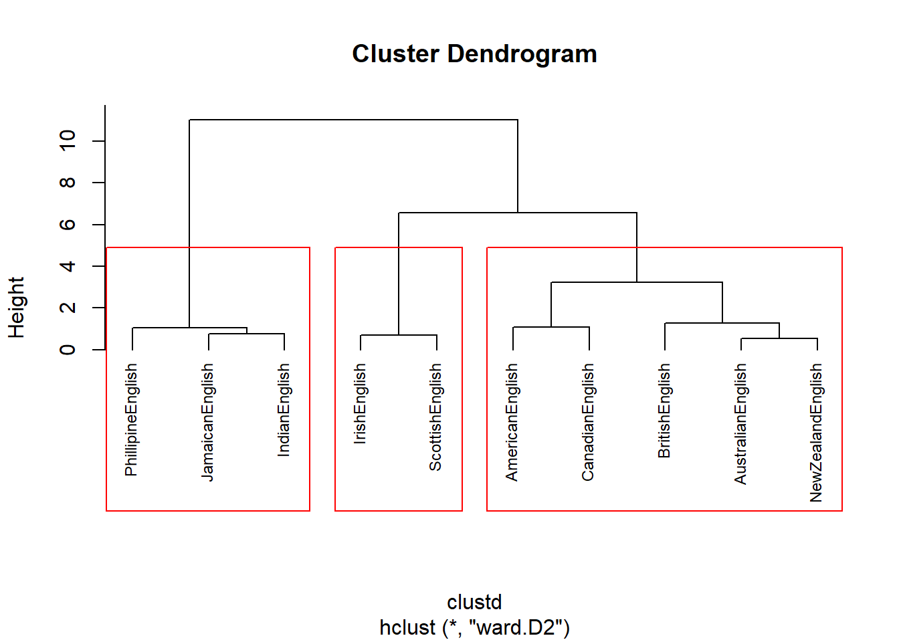
# load package ape; to install type: install.packages("ape")
library(ape)
# plot basic tree
plot(as.phylo(cd), cex = 0.9, label.offset = 1)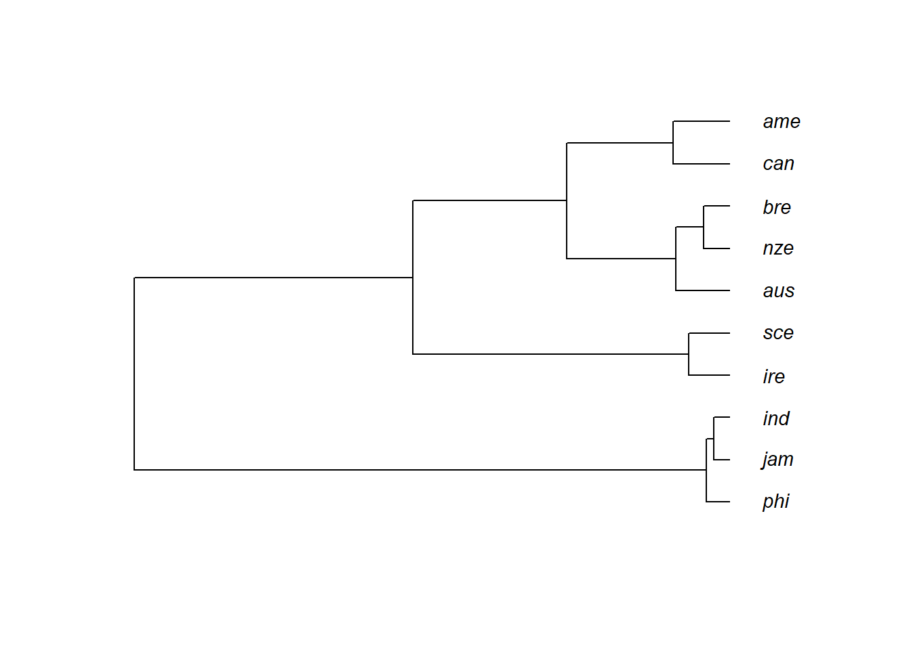
# plot as unrooted tree
plot(as.phylo(cd), type = "unrooted")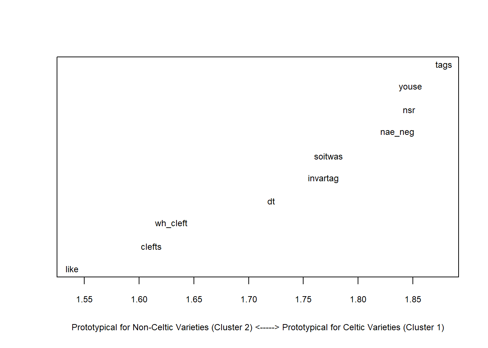
5 Cluster Analysis: Nominal Data
# generate data
ire <- c(1,1,1,1,1,1,1,1,1,1)
sce <- c(1,1,1,1,1,1,1,1,1,1)
bre <- c(0,1,1,1,0,0,1,0,1,1)
aus <- c(0,1,1,1,0,0,1,0,1,1)
nze <- c(0,1,1,1,0,0,1,0,1,1)
ame <- c(0,1,1,1,0,0,0,0,1,0)
can <- c(0,1,1,1,0,0,0,0,1,0)
jam <- c(0,0,1,0,0,0,0,0,1,0)
phi <- c(0,0,1,0,0,0,0,0,1,0)
ind <- c(0,0,1,0,0,0,0,0,1,0)
clus <- data.frame(ire, nze, can, ame, phi, jam, bre, sce, aus, ind)
# add row names
rownames(clus) <- c("nae_neg", "like", "clefts", "tags", "youse", "soitwas", "dt", "nsr", "invartag", "wh_cleft")
# convert into factors
clus <- apply(clus, 1, function(x){
x <- as.factor(x) })
# inspect data
clusnae_neg like clefts tags youse soitwas dt nsr invartag wh_cleftire “1” “1” “1” “1” “1” “1” “1” “1” “1” “1”
nze “0” “1” “1” “1” “0” “0” “1” “0” “1” “1”
can “0” “1” “1” “1” “0” “0” “0” “0” “1” “0”
ame “0” “1” “1” “1” “0” “0” “0” “0” “1” “0”
phi “0” “0” “1” “0” “0” “0” “0” “0” “1” “0”
jam “0” “0” “1” “0” “0” “0” “0” “0” “1” “0”
bre “0” “1” “1” “1” “0” “0” “1” “0” “1” “1”
sce “1” “1” “1” “1” “1” “1” “1” “1” “1” “1”
aus “0” “1” “1” “1” “0” “0” “1” “0” “1” “1”
ind “0” “0” “1” “0” “0” “0” “0” “0” “1” “0”
# clean data
clusts <- as.matrix(clus)
# create distance matrix
clustd <- dist(clusts, method = "binary") # create a distance object with binary (!) distance
# display distance matrix
round(clustd, 2)## ire nze can ame phi jam bre sce aus
## nze 0.40
## can 0.60 0.33
## ame 0.60 0.33 0.00
## phi 0.80 0.67 0.50 0.50
## jam 0.80 0.67 0.50 0.50 0.00
## bre 0.40 0.00 0.33 0.33 0.67 0.67
## sce 0.00 0.40 0.60 0.60 0.80 0.80 0.40
## aus 0.40 0.00 0.33 0.33 0.67 0.67 0.00 0.40
## ind 0.80 0.67 0.50 0.50 0.00 0.00 0.67 0.80 0.67# create cluster object (ward.D2 linkage) : cluster in a way to achieve minimum variance
cd <- hclust(clustd, method="ward.D2")
# plot result as dendrogram
plot(cd, hang = -1) # display dendogram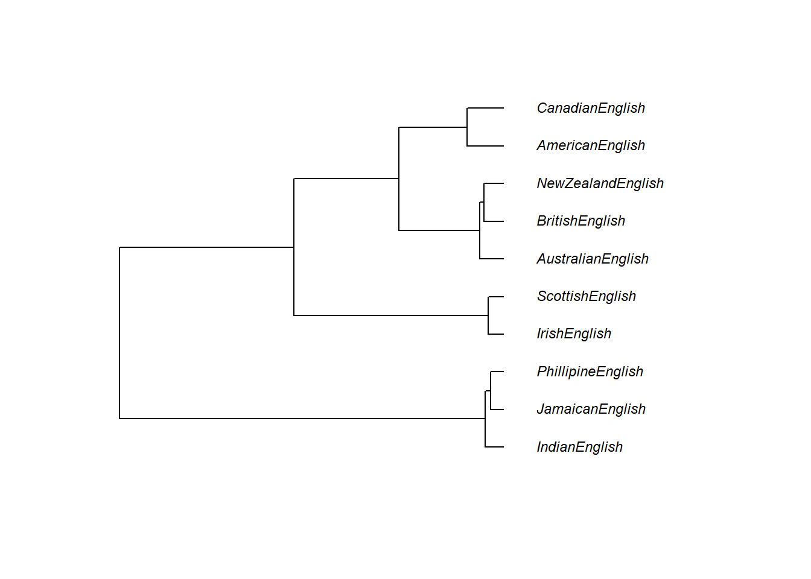
# create factor with celtic varieties on one hand and other varieties on other
cluster <- as.factor(ifelse(as.character(rownames(clusts)) == "ire", "1",
ifelse(as.character(rownames(clusts)) == "sce", "1", "0")))
# load library
library(vcd)
clsts.df <- as.data.frame(clusts)
# determine significance
library(exact2x2)
pfish <- fisher.exact(table(cluster, clsts.df$youse))
pfish[[1]]## [1] 0.02222222# determine effect size
assocstats(table(cluster, clsts.df$youse))## X^2 df P(> X^2)
## Likelihood Ratio 10.008 1 0.0015586
## Pearson 10.000 1 0.0015654
##
## Phi-Coefficient : 1
## Contingency Coeff.: 0.707
## Cramer's V : 1assocstats(table(cluster, clsts.df$like))## X^2 df P(> X^2)
## Likelihood Ratio 1.6323 1 0.20139
## Pearson 1.0714 1 0.30062
##
## Phi-Coefficient : 0.327
## Contingency Coeff.: 0.311
## Cramer's V : 0.327